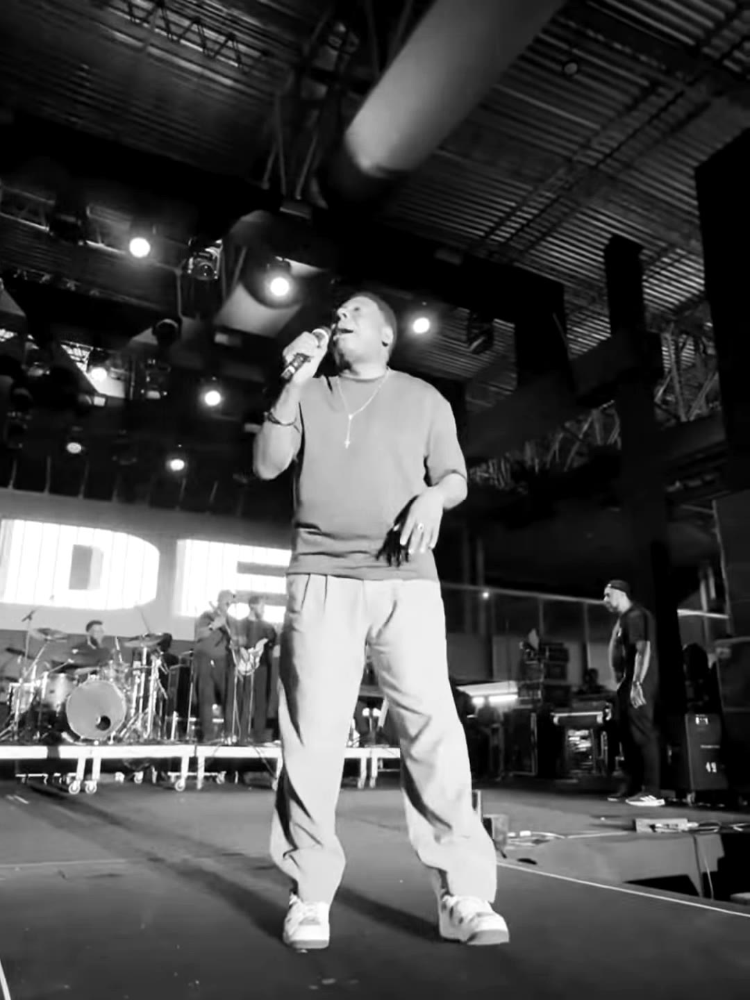
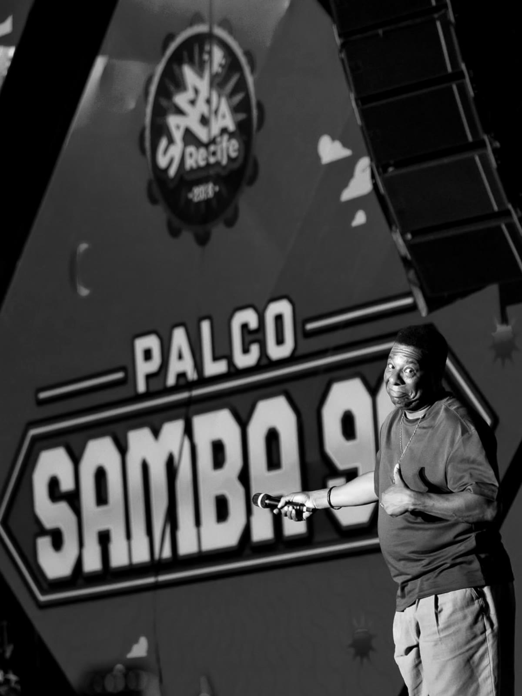
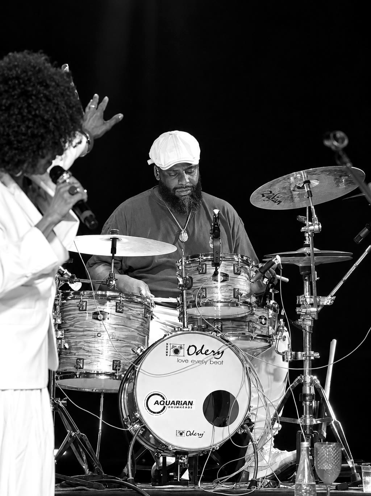
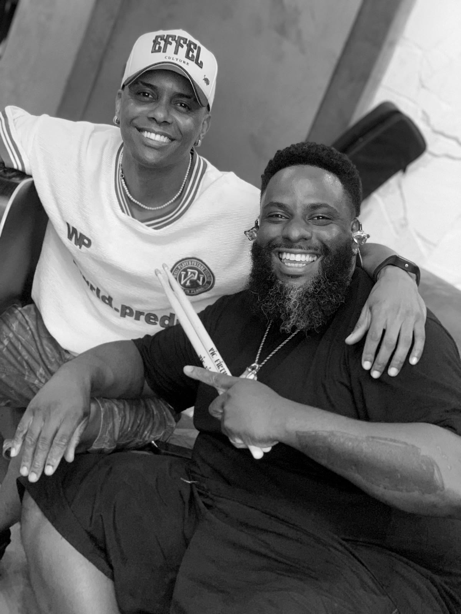

23 anos de bateria, do samba ao rap. Tocou e gravou com Beth Carvalho, Racionais MC's, Daniela Mercury, Arlindo Cruz e Netinho de Paula, e toca cada show como se fosse o primeiro.
Beth CarvalhoRacionais MC'sDaniela MercuryLauryn HillArlindo CruzEmicidaExaltasambaGrupo Fundo de QuintalEllen OlériaDiogo NogueiraLeci BrandãoNetinho de PaulaNegra LiAlexandre PiresGrupo RevelaçãoIzzy GordonBeth CarvalhoRacionais MC'sDaniela MercuryLauryn HillArlindo CruzEmicidaExaltasambaGrupo Fundo de QuintalEllen OlériaDiogo NogueiraLeci BrandãoNetinho de PaulaNegra LiAlexandre PiresGrupo RevelaçãoIzzy Gordon
“Respeite o seu corre. Respeite a sua história.”
Sankofa · símbolo adinkra: voltar e buscar o que ficou para trás. Ninguém chega longe esquecendo de onde veio.
A história
Aos 14 anos, era só um sonho.
E ele sabia que ia correr atrás dele sozinho. Pedia a Deus só saúde, porque as oportunidades ele faria acontecer, e as que chegassem ele não ia deixar passar.
No caminho apareceu Paulinho Oliveira, que acreditou quando ainda não tinha nada pra acreditar e ajudou o Léo a dar os primeiros passos na música. O caminho foi árduo. Valeu cada baqueta quebrada.
Estudou na antiga ULM, Universidade Livre de Música Tom Jobim (hoje EMESP), teve aulas particulares com Ferrinho Batera, Mike Dias e Rubinho Barsotti, passou pelo Instituto de Música IMPD e seguiu no Instituto de Música Fabiano Manhas, onde também deu aula de bateria para iniciantes. E nunca parou de estudar com grandes nomes da bateria brasileira e mundial.
Hoje, aos 39 anos, são 23 anos de bateria profissional, entre São Paulo e Madrid, tocando samba com a reverência de quem aprendeu com os mestres e a curiosidade de quem ama a música do mundo inteiro.
23anos de bateria profissional
+80artistas acompanhados e gravados
+40produtores musicais no Brasil e na Europa
23países da Europa com o musical El Viaje de la Vida
Vídeos
Ouça com fone.
Os vídeos tocam sem som. Toque em um vídeo para ouvir.
Samba Recife · 2026
Com Netinho de Paula
Palco Samba 90 no Samba Recife, um dos maiores festivais da América Latina. Na batera, Léo segura o groove de um repertório que o Brasil inteiro canta junto.
“Reencontrar ídolos que hoje são amigos, e resenhar com os amigos da estrada, é sempre bom demais.”


Segunda Absoluta“A gente tira onda de verdade.”
Pocket show · set-up híbridoRoland TM-2 e KD-9 com a caixa acústica Odery Cafekit.
Grupo EnvolvênciaTour “Canta c/ Envolvência”, Jaguariúna e Sumaré.
Mais de 80 artistas acompanhados ao vivo e em estúdio. A versatilidade de quem se adapta a cada estilo e soma em cada projeto.
Beth Carvalhoa Madrinha do Samba
Racionais MC'so rap que mudou o Brasil
Daniela Mercurya rainha do axé
Emicidarap, palavra e cultura
Ellen Olériavoz potente da música brasileira
Exaltasambapagode que embalou gerações
Izzy Gordonjazz e MPB
Arlindo Cruzsamba de raiz e de partido
Lauryn Hillsoul e hip-hop mundial
E também
MC Zaac
Cantora Bia
Cantora Malu
Paola Lapicci
Grupo Pegada de Gorila
Cantora Marcella
Marcelo Novais
Grupo Pedindo Bis
Juninho Thybau
Grupo Casa Nossa
Pastoras do Rosário
D’guas
Lia de Itamaracá
Arlindinho
Dudu Nobre
Grupo Fundo de Quintal
Seo Carlão do Peruche
Gionava
Grupo Moleque Travasso
Alba Santos
Du Bronks
Survival
Coral Semear
Banda Helles
Eder Miguel
Salgadinho
Art Popular
Chrigor
Márcio Art
Netinho de Paula
Os de Paula
Negra Li
Eliana de Lima
Reinaldo
Nicolay
Lenna Reys
Black in Company
Dryca Rizzo
Rei Salles
Fabiana Cozza
Alexandre Pires
Adriana Ribeiro
Richard e Renan
Paulinho Oliveira
Umtrio
Grupo Pixote
Deco Sampaio e os Penetras
Grupo Revelação
Grupo Gamação
Grupo Sensação
Marquinhos & Carica
Leci Brandão
Shirley Carvalho
Vitrolla 70
Diogo Nogueira
Luciana Mello
Carol Bezerra
Simoninha
Baixo Augusta
Olegário Jr
Ademir Fogaça
Quinteto em Branco e Preto
Comunidade Samba da Vela
Tia Cida
Paula Lima
Carol Roberto
Serginho Meriti
Leyla Monjardim
Banda Sinfônica do Estado de São Paulo
Nhocuné Soul
Dexter
Levi & Thiago
Os Prettos
Coisa da Antiga
Nelson Triunfo
Morabeza Nação
Carlos Casemiro
Renato Gama
Estúdio
Bateria de disco.
Integra a equipe de gravação do selo alemão Tropical Diáspora Records e, no Brasil, da gravadora e selo Anel de Bamba. Grava grupos, duplas e cantores por vários estados do Brasil e pela Europa, nos mais diversos gêneros.
Estúdios
ARK BerlinBerlim, Alemanha
MoshSão Paulo
Na CenaSão Paulo
Ness Brazil EstúdiosSão Paulo
CenturyRio de Janeiro
Cia dos TécnicosRio de Janeiro
Blue SpaceSão Paulo
Pele Preta
Anel de Bamba
RW Estúdios
Estúdio Dip BRMaringá, PR
Estúdio 91
Produtores com quem gravou
Jota Moraes
Luz Só Preto
Dudu Sampaio
Ed White
André Santos
Maurilio de Oliveira
Paulinho Oliveira
Glauco Luiz
Maikol Rocha
Boris Bass
Wilson Prateado
Pezinho
Walmir Borges
Du Oliveira
Leandro Coimbra
Léo Soul
Rodrigo Matos
Pedrinho Bonelli
Pedrinho Oliveira
Robson Cortes
Higor Cavalcante
Dada Soul
Marcelo Batista
Leandro Leart
Marcelo Casa Nossa
Paulo Trindady
Alexandre Ferreira
Claudio Rosa
Thiago Stanceven
Sérgio Mello
Israel Viana
Lafaiet Persound
Jefferson Rodrigo Baleiros
Thiago Beatriz
Magnu Sousa
Ronaldo Gama
Renato Gama
Serginho Madureira
Carlinhos 7 Cordas
Nolberto Rodrigues
Cuco Fernandez
Davi Amancio
Janay Souza
Anahit Artenia
Palcos
Labuta de estrada.
Uma amostra dos palcos, turnês e gravações mais recentes.

Izzy Gordon · Concha Acústica, Salto–SP
2026
Netinho de Paula
Samba Recife, Palco Samba 90
2026
Izzy Gordon
Tour Sementes da Tamarineira, Izzy Gordon canta Jorge Aragão. Concha Acústica, Salto–SP
2026
Samba da Ladeira
Tour acústico em São Carlos–SP e a gravação de “Iluminar depois”, já nas plataformas
2026
Segunda Absoluta
Rodas e shows com a rapaziada
2023
Grupo Fundo de Quintal
Dois shows cobrindo o padrinho Ademir Batera com os mestres do samba
2022
Grupo Envolvência
Tour Canta c/ Envolvência, Jaguariúna e Sumaré
Musicais e orquestra
El Viaje de la VidaTurnê por 23 países da Europa
Banda Sinfônica do Estado de São PauloRegida pelo maestro Marcos Sadao
O mundo cá tem fronteirasCom a Morabeza Nação
O mundo no black power de TayóMusical
Samba e JazzMusical infantil
Agora
O que vem por aí.
Disco · 2º semestre de 2027
Samba do meu jeito
O primeiro disco instrumental do Léo, já gravado, com participações de grandes nomes do cenário instrumental nacional e internacional.
Workshops e master class · Na estrada
A bateria pop no samba tradicional
A tour de workshops e master class voltou à estrada no 2º semestre de 2026, passando por capitais do Brasil.
Diretor e coordenador do curso de Performance de Bateria do Instituto de Música Arcade (Botucatu, SP) com o Los Angeles College of Music (EUA).
Trabalho
Do palco ao estúdio.
Atende em português e espanhol, entre São Paulo e Madrid.
01
Shows e turnês
Baterista para artistas, grupos e festivais. Samba, pagode e música do mundo, com leitura de repertório e pegada de palco.
02
Gravação
Bateria gravada em estúdio ou online, com set acústico ou híbrido, pronta para a sua produção. Do disco de samba ao rap.
03
Aulas de bateria
Para quem está começando ou quer evoluir: groove, linguagem do samba e postura de músico profissional, com a experiência de quem coordena um curso de performance.
04
Workshops e master class
“A bateria pop no samba tradicional” para escolas, lojas e eventos, com performance ao vivo e conversa aberta com bateras.
No palco, com o apoio de
Odery Drums
Zildjian
Vic Firth
Aquarian
Roland
Xtreme Ears
Izzo Musical

Contato
Bora fazer som junto?
Show, gravação, aula ou master class: manda uma mensagem e conta o que você tem em mente.